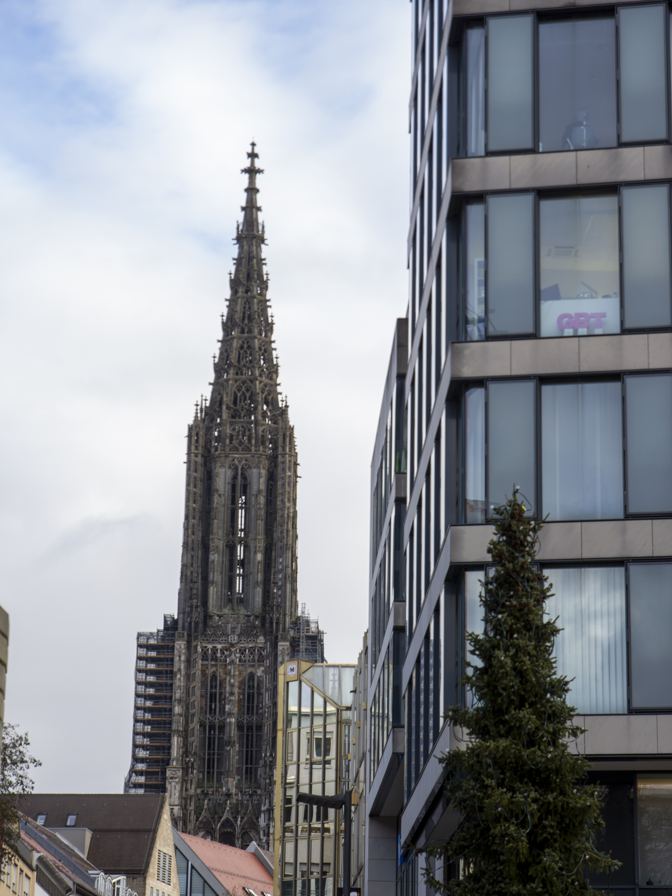

Grundlagen Tutorial

Fazit
Alle modernen Kameras bieten inzwischen auch einen Automatikmodus, der aus der Situation heraus versucht zu entscheiden, welche Einstellungen am sinnvollsten benutzt werden. Leider ist es oft der Fall, dass die Kameras nicht perfekt entscheiden können. Daher ist es empfehlenswert, den manuellen Modus zu benutzen. Das heißt, man gibt der Kamera die jeweilige Einstellung, die man haben möchte, bzw. eine Kombination aus den oben genannten.
In 70-80% der Fälle kann man den Fokus jedoch auf Automatik lassen, da der Autofokus der Kameras inzwischen sehr gut ist und sogar Gesichter bzw. Augen erkennt. Das heißt, man stellt an der Kamera als Beispiel die folgenden Werte ein, um bei nachmittäglichem Licht ein gut ausgeleuchtetes Bild zu machen.
Beispiel
Da wir aus der Hand fotografieren, sollte unsere Belichtungszeit nicht unter 1/150 s fallen, sonst wird das Foto unscharf wegen der Bewegung der Hände. Unsere Blende stellen wir auf f 6.5, da wir einen großen Schärfebereich haben wollen, aber es auch nicht zu dunkel sein soll.
Der Fokus kann auf Automatik bleiben, da es noch nicht so dunkel ist, dass die Kamera nichts mehr erkennen kann, und der Autofokus deswegen noch gut funktionieren sollte. Unsere Iso stellen wir auf einen Wert zwischen 400-800, damit die Helligkeit ausreicht, aber das Rauschen nicht zu stark wahrnehmbar ist.